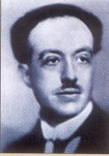

In the previous chapter, we saw how Bohr's model was remarkably
successful in explaining the origin of line spectra, and how it was
able to explain the stability of the atom. Yet, over time, it
came to be laden with the following drawbacks.
- It worked only for hydrogen and hydrogen-like atoms and
radiation. Attempts at extending the hydrogen theory to
more complex atoms exposed new difficulties.
- Some of the spectral lines were shown to possess fine
structures. At first some refinements to the Bohr theory
seemed to account for such results, but their brightness could
not be accounted for.
Some people began suspecting that the problems could not be
resolved by tinkering with the Bohr model with its well-defined
electronic orbits. A basic change in worldview, a
paradigm
shift, was needed.
The Double-Slit Experiment
Meanwhile, another simple experiment baffled physicists, because
classical physics fails to explain the results. This
well-known experiment is called the 'double slit experiment'.
To simplify the discussion a bit we shall talk about holes instead
of slits. Briefly, the experiment is as follows.
- The setup comprises a stream of electrons hitting a wall with
two small holes. A heated filament is a good source of
electrons. A constant voltage applied between the source
and the wall with two holes ensures that electrons arrive at the
holes with the same momentum. An electron detector at the
screen detects the rate of arrival of electrons.
- If we move the detector very slowly up or down, it will be
found that the rate goes through maxima and minima
reminiscent of the interference pattern [1]
associated with waves described above, but the detected
individual electrons are always point-like, never smeared
out. If we close one of the holes, the interference pattern
is lost, and an image of the open hole is seen.
- Suppose we drastically reduce the electron emission rate, to
such a level that the source emits only one electron at a time,
at random intervals. We expect that each electron passes
through only one of the two holes. For the electron that
passes through one hole, whether the other hole is open or
closed should not matter. Astonishingly, interference
fringes still build up on the screen if the experiment
runs long enough.
Thus we see that electrons, considered to be particles, show
properties of waves like interference. As you may recall,
light, well-known to be a wave, also acts as particles in some
cases, notably the photoelectric effect. This suggests
something, as De Broglie found out.
De Broglie's Explanation
In 1924 Louis de Broglie, an imaginative French physicist, asserted
that
material particles would behave as waves under certain
conditions, and vice versa. He argued that just as light
waves behave as particles to give rise to photoelectric effect,
matter also would behave as waves under certain conditions.
He even gave a simple formula to calculate the wavelength [
2] associated with electrons of a given momentum.

Prince Louise-Victor Pierre Raymond De Broglie
It might surprise you that the de Broglie wavelength associated
with photons is equal to the usual electromagnetic
wavelength. Ordinary objects, such as balls and bullets, also
have de Broglie waves associated with them, but the wavelengths are
so small that they can be neglected. Only we enter the
sub-atomic domain do they gain significance.
This idea of matter waves at first seemed very speculative, and
failed to attract attention. In 1927, however, it was
experimentally confirmed to be true by Davisson and Germer at the
Bell Laboratories, after conducting studies on scattering of
electron beams from crystals.
Decades later, today, the wave nature of matter is taken almost
for granted. Diffraction studies involving beams of electrons
or neutrons are used routinely to study the atomic structures of
solids and liquids. Matter waves are a valuable supplement to
X-rays in such studies. Electron microscopes, which employ
electron beams, have revolutionised microbiology and significantly
improved our understanding of living organisms. High-energy
particle accelerators probe extremely small space and time
intervals using the same principle.
Returning to our atom, de Broglie waves clarify the ad
hoc quantum condition of Bohr's atom. Allowed orbits are
only those for which the orbit length equals an integral
multiple of electron wavelengths. All other orbits
disappear due to destructive interference.
Nevertheless, objections to Bohr's theory continued to persist
due to its drawbacks mentioned above; a large number of
generalisations and modifications to Bohr's theory were tried, but
they were all complicated and unsatisfactory.
The breakthrough came soon, as the next chapter uncovers.
Footnotes
1. Interference is a phenomenon in which
two or more waves superpose to yield a resultant wave whose
amplitude or intensity may be greater or less than the component
waves. The striking colours on soap bubbles and oil slicks
are due to interference of light waves.
Back
2. Wavelength is a measure of the length of
a wave, and is given by the distance between two consecutive
'crests' or 'troughs' of the wave. If you measure the
distance between two 'heads' of a ripple in a pond as 10 cm, then
its wavelength is said to be 10 cm.
Back
« Previous: Bohr's Model || Next: Veiled Reality »